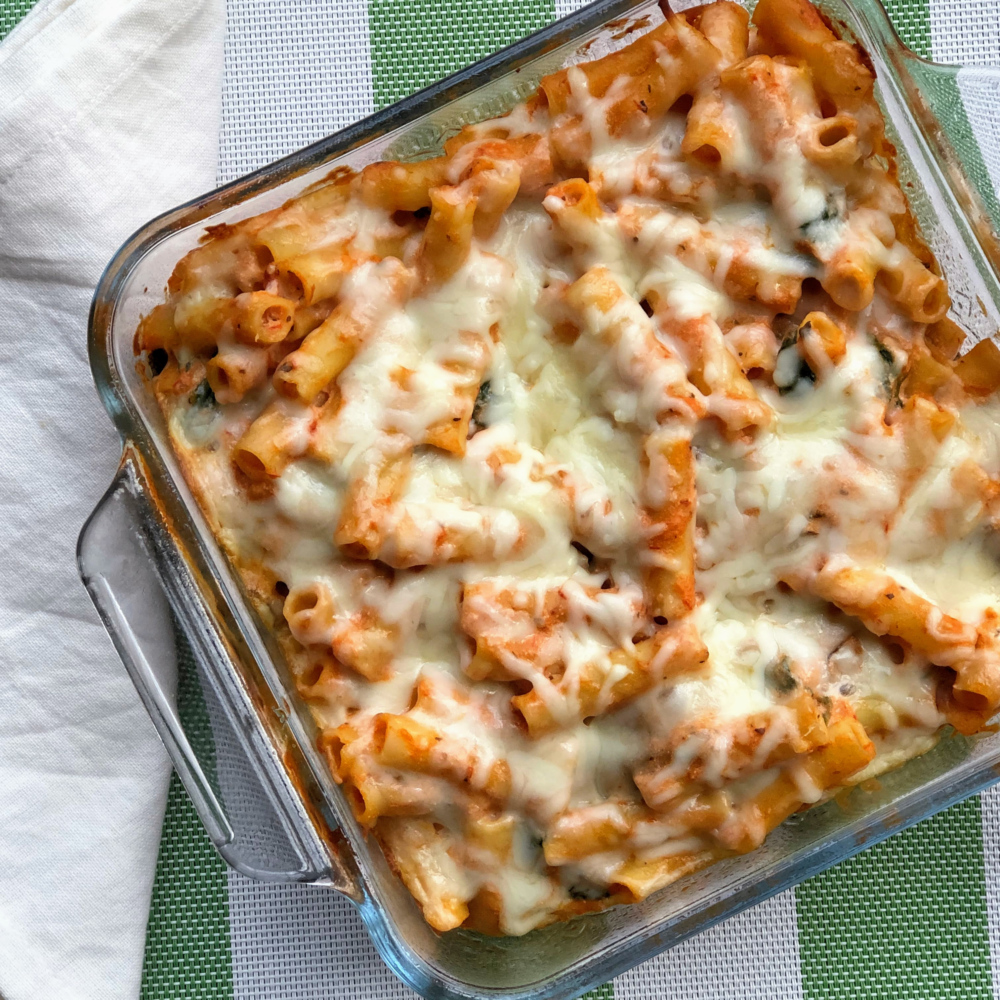

Meatless Ziti
You need for 12 servings:
- olive oil cooking spray
- 1 package ziti pasta
- 1 tablespoon olive oil
- ½ package fresh spinach, chopped
- 1 package fresh mushrooms, sliced
- 1 container part-skim ricotta cheese
- 1 package crumbled goat cheese
- ½ package shredded mozzarella cheese
- 1 jar spaghetti sauce
- Preheat the oven to 175 degrees C. Spray a 9x13-inch baking pan with cooking spray.
- Bring a large pot of lightly salted water to a boil. Add ziti and cook, stirring occasionally,
until tender yet firm to the bite, about 8 minutes. Drain and transfer to a large bowl.
- Heat olive oil in a skillet over medium-high heat. Saute spinach and mushrooms in the hot oil until soft,
about 5 minutes. Remove from heat and add to ziti.
- Add ricotta cheese, goat cheese, and 1/2 of the mozzarella cheese to the ziti mixture; combine thoroughly.
Mix in spaghetti sauce and transfer to the prepared baking pan. Sprinkle with remaining mozzarella cheese.
- Bake, uncovered, in the preheated oven until bubbly and cheese is melted, about 15 minutes.
Go back.